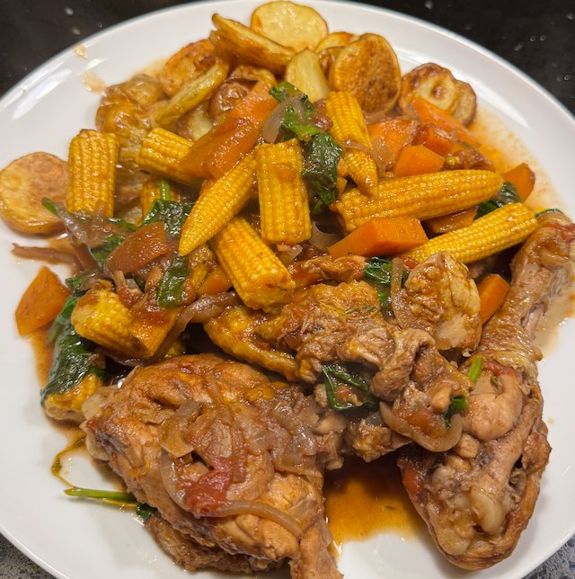

Caribbean chicken stew

Serves: 4
Cook Time: 1 hour
A family recipe from Paul.
Ingredients
- 1 chicken, cut to legs, thighs, wings and breast
- 2 tsp allspice
- 1 tsp cinnamon
- 1 tbsp fresh thyme
- olive oil
- 2 onions, sliced
- 2 garlic cloves, minced
- 1 tbsp ginger, grated
- 1 tsp chilli paste
- 1 400g tin tomatoes
- 2 tbsp brown sugar
- 1 orange, zest
- 2 tbsp soy sauce
- 1 sweet potato, 1cm dice
- 1 pack baby sweetcorn
- 500g spinach, shredded
Method
Heat pan to medium. Add olive oil and onion. Fry till onion golden.
Add garlic, ginger, chilli paste and fry for 2 min.
Add tomatoes, sugar, orange zest, soy sauce, sweet potato, sweetcorn and a bit of water. Bring to the simmer.
Heat frying pan to hot. Add olive oil, chicken, salt and fry for 5 min to brown. Flip, add allspice, cinnamon, thyme and fry for 5 min more. Deglaze pan with water.
Add chicken and deglaze to sauce, and simmer till chicken cooked through. About 20 min.
Add spinach, mash down, and wilt. Serve.